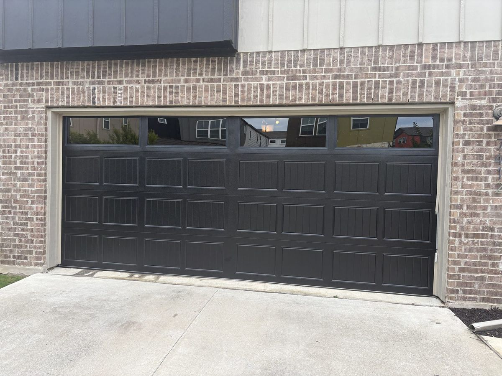

Your garage door is one of the largest and most frequently used parts of your home. In Austin, Texas, homeowners deal with intense heat, humidity, storms, temperature changes, and everyday wear and tear, all of which can affect the performance and lifespan of a garage door.
But how do you know when a garage door repair is enough, and when it makes more sense to replace the entire door? If your garage door is noisy, damaged, difficult to open, or more than 15-20 years old, it may be time to consider a garage door replacement in Austin, TX. Below are the most common signs that your garage door may need to be replaced, along with answers to questions Austin homeowners frequently ask.
How Long Does a Garage Door Last?
A typical residential garage door can last approximately 15 to 30 years, depending on the quality of the door, installation, maintenance, climate, and how frequently it is used.
However, the age of your garage door is only one factor. A 10-year-old garage door that has been properly maintained may still have many years of useful life. On the other hand, an older door with rust, structural damage, repeated failures, or outdated components may be a better candidate for replacement. If you're unsure whether you need a repair or a replacement, a professional garage door inspection can help determine the most cost-effective option.
10 Signs You Should Replace Your Garage Door
1. Your Garage Door Is More Than 15-20 Years Old
Age doesn't automatically mean your garage door needs to be replaced, but an older door deserves closer attention. Garage door technology, insulation, safety features, and materials have improved significantly over the years. If your door is approaching 20 years old and you're already experiencing frequent repairs, replacement may be a better long-term investment.
2. Your Garage Door Needs Frequent Repairs
One of the biggest warning signs is a garage door that seems to need repairs every few months. You may have already replaced springs, rollers, cables, hinges, panels, brackets, tracks, or opener components. Individual repairs are often completely normal, but when several components are failing because the door is old or worn out, continuing to repair it may not make financial sense.
3. Your Garage Door Is Sagging or No Longer Sits Level
A properly functioning garage door should remain relatively level when opening and closing. If one side is lower than the other, the door is sagging, or it doesn't sit evenly on the ground, there may be a problem with the springs, cables, tracks, panels, or overall structure. Sometimes this can be repaired, but if the door itself has become warped or structurally compromised, replacing it may be the safest solution.
4. Your Garage Door Has Cracked, Bent, or Damaged Panels
Garage door panels can become damaged from vehicle impacts, storms, accidents, age, and everyday use. A single damaged panel may be replaceable, but if several panels are cracked, bent, rusted, or deteriorating, replacing the entire garage door can make more sense, especially if the damage affects structural integrity or operation.
5. Your Garage Door Is Extremely Noisy
Some garage door noise is normal. However, excessive grinding, banging, popping, rattling, or squeaking can indicate worn rollers, loose hardware, damaged hinges, worn springs, track problems, poor lubrication, or an aging opener. Sometimes a simple tune-up can solve the problem; if the noise continues despite repairs, it may be time to consider replacement.
6. Your Garage Door Is Difficult or Slow to Open
Does your garage door struggle to open, move unevenly, or stop halfway? These can be signs of problems with the springs, rollers, cables, tracks, or the door itself. A malfunctioning garage door can create a safety hazard and may eventually become completely inoperable, so don't ignore the problem.
7. Your Garage Door Is Rusted or Rotting
Austin's weather can be hard on exterior materials. Metal garage doors can develop rust, while older wooden doors can experience cracking, swelling, warping, or rot. Small areas of surface rust may be treatable, but widespread corrosion or structural deterioration usually calls for replacement rather than repeated repairs.
8. Your Garage Is Extremely Hot in the Summer
Austin summers can be brutal. If your garage becomes extremely hot, your garage door may be part of the problem. Older, non-insulated doors provide little protection against outdoor temperatures. An insulated garage door can help improve temperature control, particularly useful if your garage is attached to your home, used as a workshop, gym, storage space, or connected to a room above the garage. Read more in our guide to garage door installation and insulation options.
9. Your Garage Door Looks Outdated
Your garage door can have a major impact on your home's curb appeal. If it looks old, faded, damaged, or out of style, replacing it can dramatically change the appearance of your home. Modern garage doors are available in traditional raised-panel, contemporary, full-view, carriage-house, insulated steel, wood-look, and custom styles.
10. Your Garage Door Is No Longer Safe
Safety should always come first. If your garage door doesn't reverse properly, comes off the tracks, has broken cables, severely damaged springs, or has other major mechanical problems, stop using it until it has been inspected. Garage doors are heavy and operate under significant tension, and attempting to repair springs or cables yourself can be dangerous.
Should I Repair or Replace My Garage Door?
Repair may make sense when: the door is relatively new, structurally sound, only one component has failed, the repair is inexpensive, and the door operates properly afterward.
Replacement may make more sense when: the door is 15-20+ years old, multiple components are failing, it requires frequent repairs, several panels are damaged, it's severely rusted or warped, it's poorly insulated, repair costs approach replacement cost, or there are ongoing safety problems.
A professional inspection can help you compare the cost of repairing your existing door with installing a new garage door.
Is It Worth Replacing an Old Garage Door?
For many homeowners, yes. A new garage door can provide better appearance, improved insulation, smoother operation, better safety features, less maintenance, and increased home value.
Should I Replace My Garage Door Opener at the Same Time?
Not always. If your existing opener is relatively new and compatible with the replacement door, it may be possible to keep it. However, if your opener is old, noisy, unreliable, or struggling to lift the door, replacing it at the same time may be a smart choice. A professional can inspect your garage door opener and determine whether it should be kept or replaced.
What Is the Best Garage Door for Austin, Texas?
There isn't one garage door that's perfect for every home. Homeowners should weigh insulation, energy efficiency, durability, weather resistance, maintenance requirements, home style, budget, and garage usage. For many Austin homeowners, insulated steel garage doors are an excellent combination of durability, appearance, and insulation, especially if the garage gets extremely hot during summer.
How Much Does a Garage Door Replacement Cost in Austin?
Cost depends on door size, material, insulation level, design, windows, hardware, opener, installation requirements, and removal of the existing door. A basic replacement can cost significantly less than a custom, high-end insulated garage door. The best way to determine actual cost is to have a local garage door professional inspect your setup and provide a detailed estimate.
Can a Garage Door Be Repaired Instead of Replaced?
Yes. Many garage door problems can be repaired without replacing the entire door, including broken springs, rollers, lift cables, hinges, tracks, weather seals, safety sensors, and openers. The important question is whether the door itself is still in good condition. If so, repair may be the most economical option.
When Should I Call a Garage Door Professional?
- The door is off track
- A cable is loose or broken
- A spring is broken
- The door won't open or close
- The door is sagging
- The opener struggles to lift the door
- The door is unusually loud
- The door reverses unexpectedly
- Panels are severely damaged
- The door has significant rust
- You are unsure whether repair or replacement is the better option
Don't wait until a small problem becomes a complete garage door failure. If you need help today, we offer same-day garage door service throughout Austin.
We proudly serve homeowners across Austin, Round Rock, Cedar Park, Georgetown, Pflugerville, Leander, Lakeway, Buda, Kyle, and surrounding areas.
Frequently Asked Questions
Most residential garage doors last approximately 15-30 years, depending on construction, maintenance, climate, and usage. Frequent repairs or structural damage may mean replacement is appropriate sooner.
The most common signs include extensive rust or damage, frequent repairs, sagging, damaged panels, excessive noise, poor operation, inadequate insulation, and an overall aging system.
Repair is generally less expensive in the short term. However, if an older garage door requires frequent repairs, replacement may provide better long-term value.
They can be. Insulated garage doors can help reduce temperature transfer and make an attached garage more comfortable, particularly during Austin's hot summers.
Many standard residential garage door replacements can be completed in a few hours, although the exact time depends on the door, garage configuration, removal requirements, and installation conditions.
Often, yes. If replacement panels are available and the rest of the door is in good condition, replacing one damaged panel can be a practical alternative to replacing the entire door.
Not necessarily. If the door is safe, structurally sound, and operating properly, replacement may not be necessary. However, if it's old and experiencing frequent problems, it's worth comparing repair costs with the cost of a new door.

Need Garage Door Service in Austin?
Whether you need a repair or a full replacement, our team can inspect your door, explain your options, and help you decide what makes the most sense for your home. Call today to schedule an inspection or request a free quote.
Call (512) 947-4451


 Apply lubricant to hinges, springs, and rollers, never to the tracks themselves.
Apply lubricant to hinges, springs, and rollers, never to the tracks themselves.